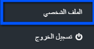
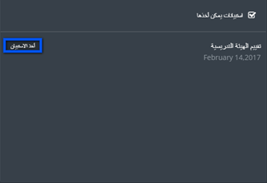
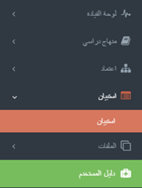
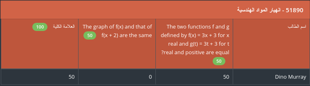
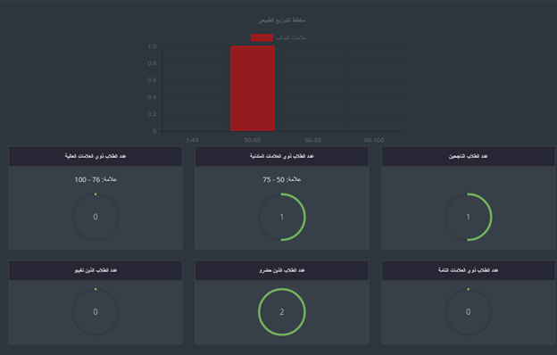
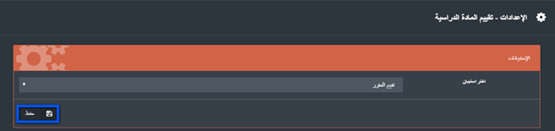

الهيئة التدريسية والموظفين
جدول المحتويات ¶
1. تسجيل الدخول ورأس الصفحة ¶
- حتى يستطيع المستخدم الدخول إلى النظام لا بد له ان يحصل على الرابط المقدّم من المؤسسة.
- قم بإدخال اسم المتسخدم وكلمة السر.
- أنقر على تسجيل الدخول.
1.1. رأس صفحة النظام ¶
|
|
|||||
|
|
|||||
-
اسم المؤسسة
-
اللغة: أنقر على "اللغة" لتغيير اللغة من العربية إلى الإنجليزية أو العكس.
-
الإشعارات: تظهر للمستخدم النشاطات والمهام المطلوبة منه.
-
أنقر على إشعارات، ومن ثم أنقر على إحدى الإشعارات
-
-
الرسائل: توصل إلى نظام الرسائل الخاص بنظام جدير
-
أنقر على "أيقونة الرسائل"

-
أنقر على "البريد الوارد" في حال وجود أي رسالة
-
لإرسال رسالة أنقر على "بريد إلكتروني جديد"
-
أدخل عنوان واسم ونص الرسالة والشخص المراد إرسال الرسالة له ومن ثم أنقر على "إرسال"

-
-
الفصل الدراسي: تستخدم لإختيار أحد الفصول الدراسية المدرجة للنظام
-
اسم المستخدم: وينقسم إلى جزئين
-
الملف الشخصي: تستخدم للوصول إلى صفحة المستخدم الشخصية

-
سوف تظهر البيانات الأساسية للمستخدم مع إمكانية القيام بالتعديل على بعض هذه البيانات.
-
تسجيل الخروج: للخروج من النظام
-
2. لوحة القيادة ¶
توضح وحدة البناء هذه بعض البيانات التفصيلية فيما يتعلق بالمواد الدراسية الخاصة بالمستخدم، وتوضحها من خلال رسوم بيانية، كما أنها تظهر المهام الخاصة بعضو الهيئة التدريسية والإستبيانات المطلوبة منه
-
يمكن الدخول إلى لوحة القيادة من خلال اللائحة الرئيسية
-
أنقر على "شخصي" للدخول إلى لوحة القيادة الشخصية للمستخدم والتي تحتوي على البيانات الشخصية، المهام، الإستبيانات
-
الصفحة الشخصية سوف تظهر للمستخدم المهام والإستبيانات المطلوبة منه ( في حال وجودها)
-
أنقر على "أخذ الإستبيان" لتعبئة الإستبيان الذي تم تعيينه عليها

-
قم بتعبئة الإستبيان وعند الإنتهاء أنقر على "إنتهاء"
-
قم بإنشاء مهمة جديدة من خلال النقر على "مهمة جديدة" وقم بتعيين مستخدم آخر للقيام بها.
- قم بتعبئة البيانات الأخرى ومن ثم أنقر على "إرسال"
-
عند النقر على "بيانات عامة" سوف تظهر البيانات العامة المتعلقة بالمؤسسة.
3. الاعتماد ¶
تتيح وحدة البناء هذه للمستخدم التحكم بإجراءات الإعتماد التي تمت تعيينه/ها عليها
-
يمكن الدخول إلى الإعتماد من خلال النقر على "الإعتماد" في اللائحة الرئيسية ومن ثم اختيار أحد نوعي الاعتماد المراد العمل عليه
-
أنقر على "إدارة" للوصول النماذج التي تم تعيين المستخدم عليها
-
يوجد مجموعة من الأزرار التي تساعد المستخدم للعمل على النماذج
- إدخال موعد التسليم، وذلك عن طريق تحديده من خلال التقويم.
-
تعيين مستخدم للقيام بتعبئة النماذج.
-
أنقر على "إضافة مستخدم" ثم قم بإختيار المستخدم الذي تريد إضافته.
-
يمكن إيجاد المستخدم المطلوب من خلال البحث عنه عن طريق الإسم، اختر اسماء المستخدمين المراد إضافتهم ومن ثم أنقر على "إضافة"
-
أنقر على "إضافة مستخدم" ثم قم بإختيار المستخدم الذي تريد إضافته.
-
زر تعديل النماذج
-
أنقر على زر تعديل النماذج، وقم بتعبئة أو تعجيل النموذج كما تريد، وقم بالنقر على حفظ في حال الإنتهاء من التعديلات دون وضع علامة "منتهي " عليه (سيتم اكماله لاحقاً)،
أو قم بالنقر على حفظ وانتهاء لحفظ النموذج ووضع علامة "منتهي " عليه
-
للرجوع إلى النسخة السابقة لهذا النموذج أنقر على "تاريخ"
-
يستطيع المستخدم أن يرى النموذج بالنسختين، النسخة الحالية للنموذج والنسخة الجديدة لنفس النموذج والتعديلات التي تمت عليه
، بالإضافة إلى وقت وتاريخ حصول التعديل على النموذج.
- قم بالتعديل على النموذج أو ابقه كما هو ثم أنقر على حفظ التعديلات
-
أنقر على زر تعديل النماذج، وقم بتعبئة أو تعجيل النموذج كما تريد، وقم بالنقر على حفظ في حال الإنتهاء من التعديلات دون وضع علامة "منتهي " عليه (سيتم اكماله لاحقاً)،
أو قم بالنقر على حفظ وانتهاء لحفظ النموذج ووضع علامة "منتهي " عليه
-
عرض النموذج
-
يستطيع المستخدم عرض النموذج من خلال النقر على "عرض"

-
يستطيع المستخدم عرض النموذج من خلال النقر على "عرض"
-
إرسال للمراجع
- بكل بساطة أنقر على إرسال النموذج للمراجع ليقوم بمراجعة البيانات.
-
تحميل النموذج
-
أنقر على "تحميل"
- أختر الصيغة المراد تحميل النموذج بها Microsoft word أو pdf.
-
أنقر على "تحميل"
-
تحتوي النماذج على مؤشرات خاصة بها وهي كالآتي
-
يستطيع المستخدم أن يرى البيانات العامة الخاصة بالمؤسسة من خلال النقر على "إحصائيات"، الموجودة داخل اللائحة الفرعية للاعتماد.
-
مستوع الملفات وهو عبارة عن إدارة الملفات
يستطيع المستخدم إبقاء وحفظ الملفات والوثائق المهمة الخاصة به أو مشاركة ملف مع مستخدم آخر، والرجوع إلى هذه الملفات مرة أخرى في أي وقت.
-
يستطيع عضو الهيئة التدريسية أن يستعرض خيارات مؤشرات الأداء من خلال النقر على "مؤشرات الأداء" الموجودة في اللائحة الفرعية للاعتماد.
المراجعين ¶
يعد المراجع جزء من وحدة البناء الخاصة بالإعتماد ، إذ أنها تتيح للمستخدم تتبع عملية المراجعة في الجامعة بشكل كامل، كما تستخدم لمراقبة ومتابعة عملية المراجعة بشكل تام.
-
أنقر على "المراجعين من اللائحة الفرعية للإعتماد
-
سوف تظهر للمستخدم "المراجع" جميع الوظائف المشار له لعملها
- يمكن للمراجع أن يقوم بالتعديل على بياناته وإضافة بعض الملاحظات والتوصيات من خلال النقر على "تحديث البيانات"
-
للدخول إلى النماذج المشار لمراجع عليها أنقر على "عرض"
-
أدخل على النمذج المطلوب ومن ثم أدخل بالبيانات المطلوبة وأنقر على "حفظ"
-
في حال تم وضع المراجع كمراجع لبرنامج أو مؤسسة فبإمكانه وضع مجموعة من التوصيات
-
أنقر على "التوصيات" ومن ثم على "إضافة توصية لوضع توصية جديدة
-
قم بكتابة نص التوصية المطلوبة ومن ثم أنقر على حفظ
-
يستطيع المستخدم أن يرى مدى التقدم في تنفيذ التوصية كما هو موضح في الصورة التالية، كما بإمكانه التعديل على التوصية من خلال النقر على "تعديل"
4. الاستبيانات ¶
تستخدم وحدة البناء هذه لتصميم و بناء الاستبيانات وعلى تعيين أشخاص عليها والتأكد من نتائجهم.
-
للدخول إلى الإستبيانات أنقر على "استبيان" الموجودة في اللائحة الرئيسية.

-
أنقر على الإستبيان المطلوب ومن ثم أنقر على "الملخص" أو "الملخص (التفاصيل)"
5. خريطة المناهج ¶
الهدف من وحدة البناء هذه هي إيجاد مجموع من مخرجات البرنامج ومخرجات المادة الدراسية للتعلم (PLOs و CLOs) والربط بينهما، والذي سوف يساعد بدوره على وضع جميع المتطلبات الخاصة بالمواد الدراسية المدرّسة في الجامعة
الفوائد: هدف وحدة البناء هذه هو رفع مستوى جودة المواد الدراسية في الجامعة
-
للدخول إلى خريطة المناهج أنقر على "خريطة المناهج" المتواجدة في اللائحة الفرعية من المنهاج الدراسي.
-
أنقر على خريطة المناهج وسوف تظهر لك اللائحة المدرجة.
-
لإدارة المخرجات التعليمية للمادة الدراسية CLOs ، أنقر على "إدارة المواد الدراسية"
-
أنقر على مخرجات التعلم
-
أنقر على إدارة مخرجات التعلم، وقم بتعبة البيانات المطلوبة وأنقر على "حفظ"
-
من مخرجات التعلم أنقر على "ربط"
-
أختر أحد طرق التقييم وقم بربطها من خلال النقر على المربع الأبيض المتواجد بجانبها.
-
أنقر على طرق التقييم ومن ثم قم بالنقر على "إدارة طرق التقييم"
-
قم بتعبئة الحقول المطلوبة لطرق التقييم ومن ثم أنقر على "حفظ"
-
أنقر على شعب المواد الدراسية، ومن ثم ربط مخرجات التعلم وقم باختيار طرق التقييم المطلوبة، وذلك من خلال السؤال المطلوب
ومن ثم قم بربطها مع مخرجات التعلم للمادة التعليمية CLO's ومن ثم ضع مقياس لنقاط السؤال.
-
عُد مرة أخرى لصفحة الشعب الدراسية ، ومن ثم أنقر على تقييم الطلاب وقم باختيار الطالب وطريقة التقييم المطلوبة ،
حتى تستطيع وضع نقاط الطلاب لكل سؤال ومن ثم أنقر على "حفظ".
-
للحصول على تقرير للخطوات السابقة أنقر على تقارير من صفحة خريطة المناهج، ومن ثم أختر التقرير المطلوب وتفاصيل العرض الخاصة به.
دفتر العلامات ¶
هذا الجزء من وحدة النظام يتيح للمستخدم الوصول لجميع علامات الطالب
-
للدخول إلى دفتر العلامات قم بالنفر على " دفتر العلامات"
- أنقر على "عرض الشعب"
-
أنقر على "عرض الطلاب" المتواجدة بجانب اسم الشعبة الدراسية المطلوبة

-
أنقر على "المناهج" لتقييم الطالب كما هو موضح في الصورة التالية
-
أنقر على "الاختبارات" واختر أحد الاختبارات، الاختبارات القصيرة، الوظائف، لرؤية علامات الطالب بها

-
سوف يظهر أسماء جميع الطلاب وعلاماتهم في هذا الاختبار

-
يمكن للمستخدم استخراج تقرير بالنتائج الخاصة بالاختبار أو الوظيفة كما هو موضح ومن خلال النقر على "تقرير"

6. الاختبارات ¶
وحدة البناء الخاصة بالاختبارت هي المسؤولة عن كل ما يخص اختبارات الطالب والتس تتضمن الاختبارات، الاختبارت القصيرة والمشاريع بالإضافة إلى إمكانية الوصول لأي سؤال يحتاجه المستخدم بأي وقت
-
أنقر على "الاختبارت" المدرجة في اللائحة الرئيسية

-
يمكن للمستخدم إدارة مجموعة مختلفة من الاختبارات المتوفرة في اللائحة الخاصة
- للبدء بالإختبار أنقر على "الاختبار"
-
لإنشاء اختبار جديد أنقر على "إنشاء اختبار"
-
قم بتعبئة جميع البيانات الخاصة بالاختبار ومن ثم أنقر على "حفظ"
-
سوف يظهر الاختبار مع جميع البيانات الخاصة وبالإجراءات كما هو موضح

- " عرض " : يستخدم لرؤية الصورة النهائية للاختبار بعد اختيار الاسئلة
- " إدارة " : يتيح للسمتخدم التعديل على بيانات الإمتحان "كما تم توضيحها في نقطة 5"
- " تصميم " : يتيح للمستخدم إضافة وحذف اسئلة الاختبار
- " حذف " : لإزالة الاختبار
- " المراقب" : يتيح للمستخدم إضافة أو إزالة مراقب للامتحان
- " إدارة الشعب " : يتيح للمستخدم اختيار الشعب الدراسية المطلوب منها القيام بهذا الاختبار
-
لإضافة سؤال على الاختبار أنقر على " تصميم"
-
اختر السؤال المراد إضافته ومن ثم قم بتحديد علامة السؤال وأنقر على "حفظ"
-
قم بإعادة الخطوة السابقة حتى يصل مجموع علامات الاسئلة مساوٍ لعلامة الاختبار الكاملة
-
لتقوم بنشر الاختبار قم بالنقر على "نشر"

-
سيظهر صنوق حوار يحتوي على مجموعة من البيانات ، قم بتعبئة البيانات المطلوبة ومن ثم
أنقر على "نشر"
- بعد أن يتم البدء الاختبار، يمكن للمستخدم النقر على "حضور الطلاب"، للسماح للطلاب والتأكيد على حضورهم للاختبار
- أنقر على "حضور الطلاب"
-
في حال حضور الطالب للامتحان، أنقر على المربع الذي بجانب اسم الطالب للتأكيد على حضوره
- بعد انتهاء الاختبار، يمكن للمستخدم الانتقال إلى الخطوة التالية وهي تصحيح الاختبار للطلاب من خلال النقر على "تصحيح"
- انقر على "التحقق من الإجابة"المتواجدة بجانب اسم الطالب
-
في حال حضور الطالب للامتحان، أنقر على المربع الذي بجانب اسم الطالب للتأكيد على حضوره

الاختبارات القصيرة ¶
لإنشاء وإدارة الاختبارات القصيرة قم بالخطوات السابقة لانشاء اختبار مع وجود أختلافَين:
- سوف يكون هناك خيارَين جديدَين للمستخدم وهو بدء الاختبار وانهاء الاختبار ، وتعتمد على وقت البدء والانتهاء الذي تم تحديده مسبقاً
- لا يوجد لائحة حضور للطلاب
-
أنقر على "الاختبارات القصيرة" المتواجدة في اللائحة الخاصة بالاختبارات
-
بعد أن يتم إنشاء الاختبار يمكن النقر على "بدء الاختبار" ليستطيع الطالب البدء
بالإجابة
-
للتأكيد على بدء الاختبار أنقر على "نعم"

-
لإيقاف الاختبار أنقر على "انهاء الاختبار"
-
. للتأكيد على الطلب أنقر على "نعم"
الوظائف ¶
لانشاء وإدارة الوظائف على المستخدم اتباع جميع الخطوات الخاصة بانشاء الاختبار، والاختلاف الوحيد هنا هو عدم وجود لائحة لحضور الطلاب
-
1. أنقر على "الوظائف"، ومن ثم أنقر على "انشاء وظيفة"

-
قم بتعبئة جميع البيانات المطلوبة ومن ثم أنقر على "حفظ"
- قم بإدارة الوظيفة بالطريقة التي تناسبك
بنك الاسئلة ¶
يحتوي هذا الجزء من وحدة البناء الخاصة بالاختبارات على مجموعة الأسئلة المستخدمة في بعض الاختبارات القديمة، والتي يمكن للمستخدم إعادة استخدامها مرة أخرى
- أنقر على "بنك الأسئلة"
-
قم بالنقر على "انشاء سؤال"
-
قم بإدخال جميع البيانات المطلوبة
-
يمكن للمستخدم اختيار حالة السؤال من اللائحة الخاصة بحالة السؤال
-
حالة السؤال تنقسم إلى قسمين:
- خاص: وهي الاسئلة التي يتم انشاؤها من قبل المستخدم ولا يمكن لأحد غيره استخدامها
- عام: الاسئلة التي يمكن لأي مستخدم داخل النظام استخدامها
-
في حال أن السؤال يتطلب الافاق ملف أنقر على "اتاحة ارفاق ملف" ليتمكن الطالب من ارفاق
ملف للسؤال
- بعد الانتهاء أنقر على "حفظ"
-
يمكن للمستخدم أن يقوم بالتعديل على السؤال من خلال النقر على "تعديل"
-
يمكن للمستخدم أن يقوم بربط السؤال بمخرجات التعلم من خلال "مخرجات التعلم"
-
قم باختيار مخرج التعلم المطلوب ومن ثم انقر على "حفظ"
بنك الاختبارات ¶
يحتوي هذا الجزء من وحدة البناء الخاصة بالاختبارات على مجموعة من الاختبارات القديمة التي يمكن للمستخدم الاستفادة منها في بناء الاختبار الخاص به
-
قم باختيار المادة الدراسية التي تريد رؤية الاختبارات الخاصة بها

-
قم باختيار الاختبار وانقر على "عرض الاختبار"
-
يمكن استخراج تقرير عن الاختبار من خلال النقر على "تقرير
7. الملفات ¶
في جدير، يوجد ثلاثة أنوع للملفات:
- ملف المادة الدراسية: وهذا الجزء سيحتوي على بيانات المادة الدراسية، ابتداءً من المادة الدراسية إلى مخطط هذه المادة وغيرها.
- ملف عضو الهيئة التدريسية: يحتوي على البيانات المتعلقة بعضو الهيئة التدريسية مثل ملف أداء عضو الهيئة التدريسية
- ملف الطلاب: يحتوي على البيانات العامة لطلاب المؤسسة.
-
للوصول إلى الملفات أنقر على "ملفات" الموجودة في اللائحة الرئيسية ومن خلالها اختر أحد الأنواع التي تم ذكرها سابقا
-
لعرض البيانات لأحد أعضاء الهيئة التدريسية ، فبإمكان المستخدم أن يقوم بالبحث عن اسم عضو الهيئة التدريسة ، وستظهر النتائج المتعلفة بالبحث ومن خلال النقر على اسم العضو سوف تظهر جميع التفاصيل الخاصة به
-
يمكن للمستخدم التنقل بين بيانات المستخدم من خلال علامات التبويب المتاحة
-
يمكن للمستخدم أن يقوم بعرض الملف الخاص به من خلال النقر على "ملفي"
- جميع الخطوات السابقة تنطبق أيضا على ملف الطالب
-
أنقر على ملف المواد الدراسية ومن ثم أختر أحد المواد الدراسية المتاحة
- أنقر على "إدارة" للمادة الدراسية المطلوبة
-
صفحة تقييم المواد الدراسية سوف تظهر تفاصيل البيانات من استبيان تقييم المادة الدراسية
- أنقر على "مخطط المادة الدراسية" لعرض البيانات حول الخطة الدراسية للمادة وإمكانية التعديل عليها
-
أنقرر على "تعديل" على أي حقل من الحقول لتبدأ بإجراءات التعديل
-
قم بتعبئة البيانات المطلوبة ومن ثم أنقر على "حفظ"
-
قم بالتنقل بين جميع علامات التبويب بنفس الطريقة ، وقم بإضافة أو تعديل البيانات حسب الحاجة
-
من الضفحة الرئيسية لملفات المادة الدراسية أنقر على "الإعدادات"
-
قم بإختيار الإستبيان الذي سيؤثر على الرسم البياني ومن ثم أنقر على "حفظ".

8.أداء أعضاء الهيئةالتدريسية ¶
تساعد وحدة البناء هذه الجامعة بعملية إدارة وتنظيم عملية تقييم أداء أعضاء الهيئة التدريسية من خلال تحديد موعد نهائي لتسليم التقييم، إدارة النماذج وإصدار تقرير تفصيلي عن نتائج التقييم على مستويات مختلفة في الجامعة
-
للدخول إلى أداء أعضاء الهيئة التدريسية أنقر على "أداء عضو الهيئة التدريسية" في اللائحة الرئيسية
-
اختر أحد الأنوع للبدء بتعبئة النماذج
-
اختر أحد النماذج التابعة للنوع الذي تم اختياره
-
أنقر على "إضافة" لإضافة البيانات في الحقول المطلوبة للنموذج ومن ثم أنقر على حفظ
-
ستظهر النتيجة التي تم إدخالها في اللائحة الخاصة بالنموذج كما يمكن للمستخدم أن يقوم بالتعديل عليها أو حذفها
-
للحصول على التقارير التفصيلية أنقر على "التقرير"
-
سوف تظهر التقارير بناء على المسمى الوظيفي الخاص بالمستخدم ، كما يمكن للمستخدم أن يختار أحد المستويات لرؤية التقارير الخاصة بها
-
يمكن للمستخدم اختيار أحد أعضاء الهيئة التدريسية وإضافة التوصيات وتقييم الأداء الخاص به
-
يمكن الحصول على تقرير تفصيلي بشكلين إما من خلال النقر على "تقرير HTML" أو من خلال "الحصول على مراجعة"
9. دليل المستخدم ¶
وحدة البناء هذه تحتوي على جميع الروابط التي قد يحتاجها المستخدم
-
للدخول إلى دليل المستخدم أنقر على "دليل المستخدم" في اللائحة الرئيسية
-
ستظهر لك لائحة تضم جميع الأدلة التي تم رفعها مسبقاً على نظام جدير.